தொழிற்சாலையின் செயலியை உங்கள் தொலைபேசியில் பயன்படுத்துவது எப்படி: உள்நுழைதல், உங்கள் மாதாந்திர கொழுந்துக் கணக்கைப் படித்தல், வருமானத்தையும் சேமிப்பையும் பார்த்தல், முன்பணம், கடன், உரம் அல்லது தேயிலைப் பொதிகளைக் கோருதல், உங்கள் விவரங்களை மாற்றுதல், அலுவலகத்தைத் தொடர்பு கொள்ளுதல். படிப்படியாக, திரைப் படங்களுடனும் செய்து காட்டிய உதாரணங்களுடனும்.
யாருக்கு: வழங்குநர்களுக்கும், அவர்களுக்கு உதவும் அலுவலக ஊழியர்களுக்கும்.
திரைப் படங்கள்: உண்மையான செயலியிலிருந்து, Galaboda Tea Factory இன் 5708 ஆம் இலக்க வழங்குநருக்கான மாதிரித் தரவுடன் எடுக்கப்பட்டவை (ஜூலை 2026). உங்கள் தொழிற்சாலையின் செயலிக்கு அதன் சொந்தப் பெயர், நிறங்கள், எண்கள் இருக்கும்.
நிலவரம்: 28 ஒக்டோபர் 2026. ஒவ்வொரு திரைக்கும் பின்னால் உள்ள விதிகள் "வழங்குநர் செயலி: இது எவ்வாறு செயல்படுகிறது" என்ற வழிகாட்டியில் உள்ளன.
உள்ளடக்கம்
தொடங்கும் முன்
உள்நுழைதல்
செயலியில் வழி கண்டுபிடித்தல்
உங்கள் மாதாந்திரக் கணக்கு
பில்லைப் படித்தல்: இரண்டு உதாரணங்கள்
வருமான வரலாறு
கடன் வசதி கோருதல்: ஒவ்வொரு கோரிக்கைத் திரையும் செய்வது
முன்பணம் கோருதல்
கடன் கோருதல்
உரம் கோருதல்
தேயிலைப் பொதிகள் கோருதல்
சேமிப்பு
உங்கள் சுயவிவரமும் நீங்கள் பணம் பெறும் விதமும்
தொழிற்சாலையைத் தொடர்பு கொள்ளுதல்
செய்திகளும் அறிவிப்புகளும்
அமைப்புகள்
உதவிப் பக்கங்கள்
கேள்விகளும் பதில்களும்
1. தொடங்கும் முன்
உங்கள் வழங்குநர் எண். அது உங்கள் அச்சிடப்பட்ட சீட்டில் "Sup. Code" என்பதற்கு அருகில் உள்ள எண் (உதாரணமாக 5708). அடைப்புக்குள் உள்ள பிரிவு தேவையில்லை.
தொழிற்சாலை அலுவலகம் தரும் முதல் கடவுச்சொல். அலுவலகம் அதைக் கவுண்டரில் அல்லது தொலைபேசியில் உங்களுக்குத் தரும். முதல் முறை உள்நுழையும்போது உங்களுக்கென ஒரு கடவுச்சொல்லைத் தேர்ந்தெடுப்பீர்கள்.
தொழிற்சாலையின் செயலி உங்கள் தொலைபேசியில், App Store அல்லது Google Play இலிருந்து.
தெரிந்து கொள்ளுங்கள்
செயலி உங்கள் சொந்தப் பதிவுகளை மட்டுமே காட்டும்.
ஒவ்வொரு எண்ணும் தொழிற்சாலையிடமிருந்தே வருகிறது. செயலி தானாக எதையும் கணக்கிடுவதில்லை.
கோரிக்கை என்பது முடிவு அல்ல: நீங்கள் கேட்கும் ஒவ்வொன்றையும் தொழிற்சாலை அலுவலகமே அனுமதிக்கும் அல்லது நிராகரிக்கும்.
2. உள்நுழைதல்
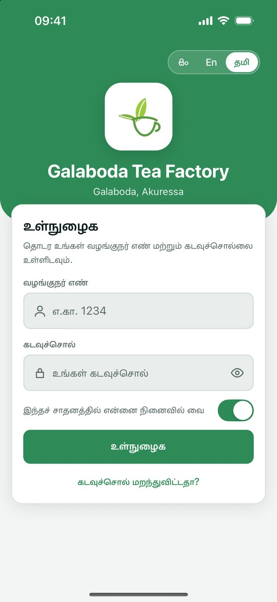
படம் 2.1 உள்நுழைக
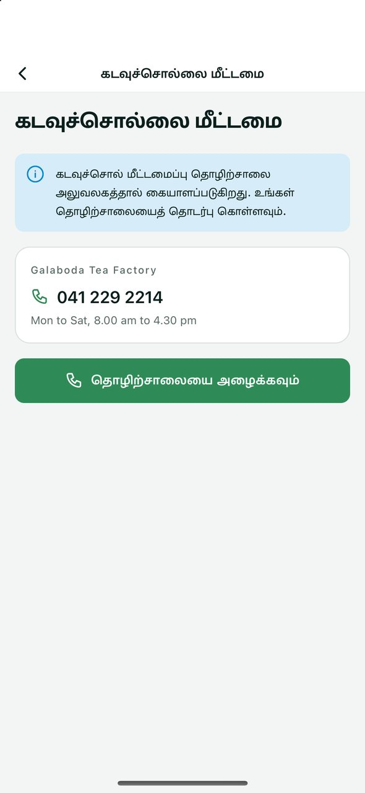
படம் 2.2 கடவுச்சொல் மறந்துவிட்டதா
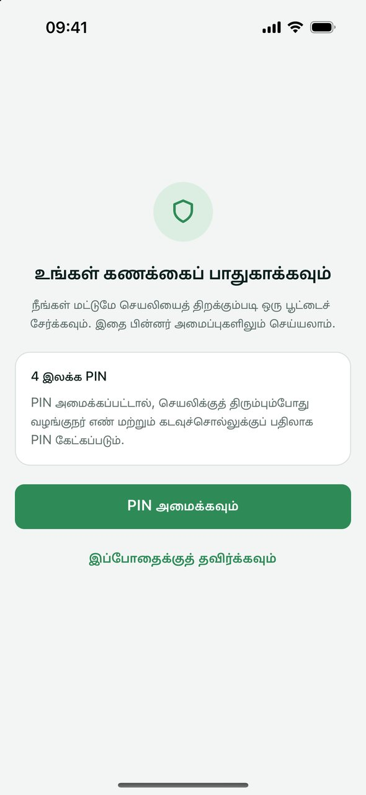
படம் 2.3 உங்கள் கணக்கைப் பாதுகாக்கவும்
2.1 உள்நுழைக
மேலே உங்கள் மொழியைத் தேர்ந்தெடுங்கள்: සිං, En அல்லது தமி. பின்னர் அமைப்புகளில் அதை மாற்றலாம்.
வழங்குநர் எண் என்ற இடத்தில் உங்கள் வழங்குநர் எண்ணைத் தட்டச்சு செய்யுங்கள் (உதாரணமாக 5708).
உங்கள் கடவுச்சொல்லைத் தட்டச்சு செய்யுங்கள். தட்டச்சு செய்ததைப் பார்க்க கண் குறியைத் தட்டுங்கள்.
இது உங்கள் சொந்தத் தொலைபேசி என்றால் இந்தச் சாதனத்தில் என்னை நினைவில் வை என்பதை இயக்கியபடியே விடுங்கள். அப்போது அவற்றை மீண்டும் தட்டச்சு செய்ய வேண்டியதில்லை.
உள்நுழைக என்பதைத் தட்டுங்கள்.
2.2 முதல் முறை: உங்கள் சொந்தக் கடவுச்சொல்லைத் தேர்ந்தெடுங்கள்
அலுவலகம் தந்த கடவுச்சொல் இரகசியமானது அல்ல, ஏனெனில் அது கவுண்டரில் அல்லது தொலைபேசியில் உங்களுக்குக் கொடுக்கப்பட்டது. முதல் முறை உள்நுழையும்போது, உங்களுக்கென ஒரு கடவுச்சொல்லைத் தேர்ந்தெடுக்குமாறு செயலி கேட்கும்: அதை இரண்டு முறை தட்டச்சு செய்யுங்கள். அலுவலகத்திலேயே நீங்கள் ஒன்றைத் தேர்ந்தெடுத்திருந்தால், அதையே வைத்துக்கொள்ளலாம்; செயலி ஒரு முறை மட்டுமே கேட்கும்.
2.3 PIN மூலம் உங்கள் கணக்கைப் பாதுகாக்கவும்
அடுத்து, செயலி 4 இலக்க PIN ஒன்றை அமைக்க முன்வரும் (படம் 2.3). PIN இருந்தால், செயலிக்கு மீண்டும் வரும்போது கடவுச்சொல்லுக்குப் பதிலாக PIN கேட்கப்படும். உங்கள் தொலைபேசியில் கைரேகை அல்லது முகம் மூலம் திறக்கும் வசதி இருந்தால், அதையும் பயன்படுத்தலாம். PIN அமைக்கவும் என்பதைத் தட்டுங்கள், அல்லது இப்போதைக்குத் தவிர்க்கவும் என்பதைத் தட்டி பின்னர் அமைப்புகளில் அமையுங்கள்.
2.4 கடவுச்சொல் மறந்துவிட்டதா?
உள்நுழைவுத் திரையில் கடவுச்சொல் மறந்துவிட்டதா? என்பதைத் தட்டுங்கள். மின்னஞ்சல் மூலம் மீட்டமைக்கும் வசதி இல்லை: தொழிற்சாலை அலுவலகமே புதிய கடவுச்சொல்லைத் தரும். திரையில் தொழிற்சாலையின் தொலைபேசி எண்ணும் அலுவலக நேரமும் காட்டப்படும்; தொழிற்சாலையை அழைக்கவும் அந்த எண்ணை அழைக்கும் (படம் 2.2). புதிய கடவுச்சொல் ஒரு முறை மட்டுமே செயல்படும்; உள்நுழையும்போது மீண்டும் உங்கள் சொந்தக் கடவுச்சொல்லைத் தேர்ந்தெடுப்பீர்கள்.
3. செயலியில் வழி கண்டுபிடித்தல்
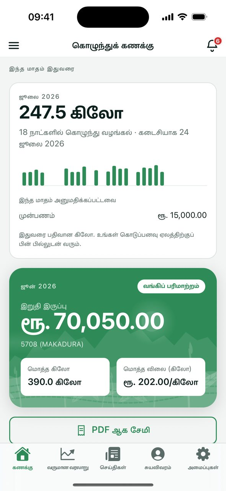
படம் 3.1 கணக்கு தாவல்
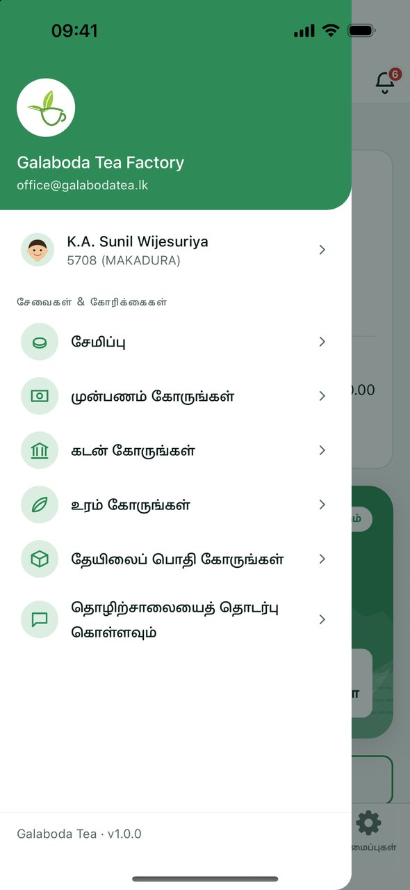
படம் 3.2 பக்க மெனு
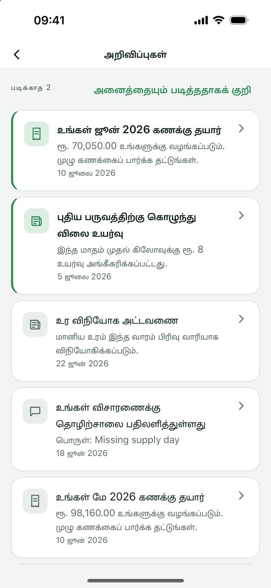
படம் 3.3 அறிவிப்புகள்
எங்கே
அங்கே என்ன இருக்கிறது
கீழே உள்ள தாவல்கள்
கணக்கு (உங்கள் பில்), வருமான வரலாறு, செய்திகள், சுயவிவரம், அமைப்புகள்
பக்க மெனு: மேலே இடது மூலையில் ☰ ஐத் தட்டுங்கள்
சேமிப்பு, முன்பணம் கோருங்கள், கடன் கோருங்கள், உரம் கோருங்கள், தேயிலைப் பொதி கோருங்கள், தொழிற்சாலையைத் தொடர்பு கொள்ளவும். உங்கள் தொழிற்சாலை நடத்தும் சேவைகள் மட்டுமே தோன்றும்
மேலே வலது மூலையில் உள்ள மணி
தொழிற்சாலை உங்களுக்கு அனுப்பிய அனைத்தும். சிவப்பு எண், நீங்கள் இன்னும் படிக்காதவற்றின் எண்ணிக்கை
4. உங்கள் மாதாந்திரக் கணக்கு
கணக்கு தாவல் உங்கள் மிகப் புதிய, வெளியிடப்பட்ட கொழுந்துக் கணக்கைக் காட்டும். அது அச்சிடப்பட்ட சீட்டைப் போலவே அமைக்கப்பட்டுள்ளது. எனவே காகிதச் சீட்டைத் தொலைபேசிக்கு அருகில் வைத்து, அதே எண்களை அதே வரிசையில் காணலாம்.
4.1 இந்த மாதம் இதுவரை
மேலே உள்ள இந்த மாதம் இதுவரை அட்டை நடப்பு மாதத்தைக் காட்டும்: இதுவரை நிறுக்கப்பட்ட கிலோ, நீங்கள் எத்தனை நாட்கள் வழங்கினீர்கள், கடைசி நாள், ஒவ்வொரு நாளுக்கும் ஒரு பட்டை, இந்த மாதம் தொழிற்சாலை உங்களுக்கு அனுமதித்தவை (படம் 3.1: ஜூலை 2026, 18 நாட்களில் 247.5 கிலோ, ரூ. 15,000.00 முன்பணம் அனுமதிக்கப்பட்டது).
இந்த அட்டையில் பணத் தொகை இல்லை
ஒரு மாதத்தின் விலை தேயிலை ஏலத்துக்குப் பிறகே நிர்ணயிக்கப்படும். அதனால் இந்த அட்டை கிலோவை மட்டுமே காட்டும். மாதம் முடிந்ததும், அந்தப் பில் வெளியிடப்படும் வரை "மாதம் முடிந்தது, பில் தயாராகிறது" என்று காட்டும். (இந்த அட்டையைக் காட்டுவதா என்பதை உங்கள் தொழிற்சாலை தீர்மானிக்கும்.)
4.2 பில்
அதன் கீழே பில் இருக்கும்: மாதம், இறுதி இருப்பு (உங்களுக்குக் கிடைக்கும் தொகை), நீங்கள் பணம் பெறும் விதம், மொத்த கிலோ, விலை. அதன் ஒவ்வொரு பகுதியையும் பார்க்கக் கீழே உருட்டுங்கள்.
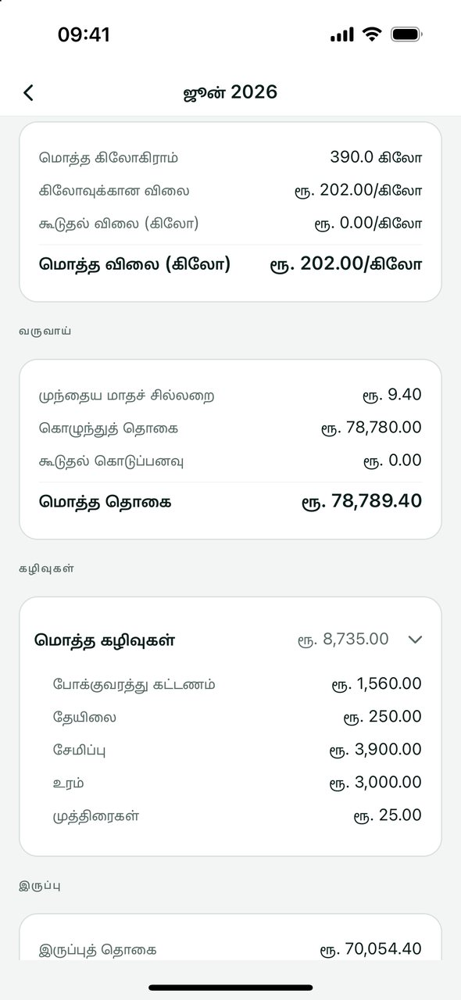
படம் 4.1 விலை, வருவாய், கழிவுகள்
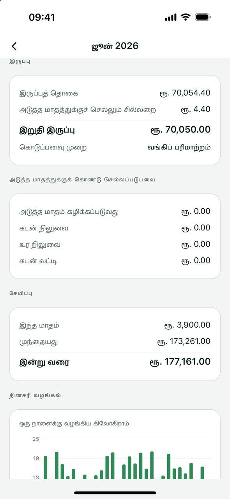
படம் 4.2 இருப்பு, அடுத்த மாதத்துக்குக் கொண்டு செல்லப்படுபவை, சேமிப்பு
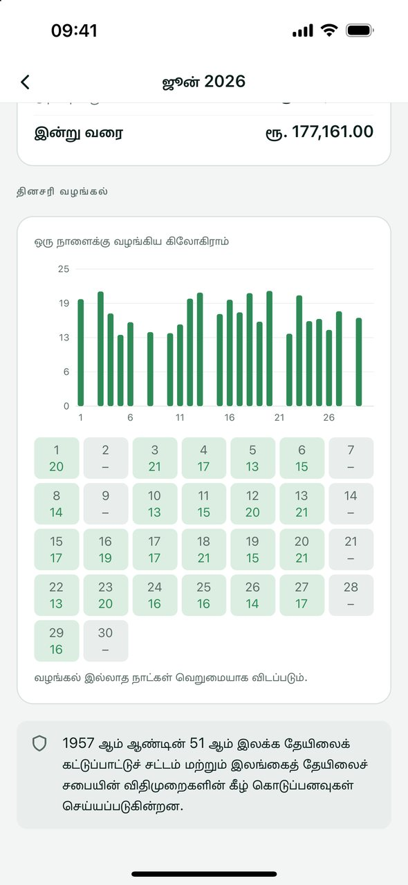
படம் 4.3 தினசரி வழங்கல்
பகுதி
அது உங்களுக்குச் சொல்வது
விலை
மாதத்தின் உங்கள் கிலோவும், கிலோவுக்கான விலையும் (கூடுதல் விலை இருந்தால் அதுவும்)
வருவாய்
கடந்த மாதத்திலிருந்து வந்த சில்லறை, கொழுந்துத் தொகை (கிலோ × விலை), கூடுதல் கொடுப்பனவு ஏதும் இருந்தால் அது, மற்றும் மொத்த தொகை
கழிவுகள்
தொகை உள்ள வரிகளைத் திறக்க மொத்த கழிவுகள் என்பதைத் தட்டுங்கள்: போக்குவரத்து, தேயிலை, சேமிப்பு, கடன், முன்பணம், உரம், பிற கழிவுகள் (அலுவலகம் குறிப்பிட்ட காரணத்துடன்), முத்திரைகள், முந்தைய நிலுவைகள்
இருப்பு
மொத்த தொகையிலிருந்து கழிவுகளைக் கழித்தது, அடுத்த மாதத்துக்குச் செல்லும் சில்லறை, உங்களுக்குக் கிடைக்கும் இறுதி இருப்பு
அடுத்த மாதத்துக்குக் கொண்டு செல்லப்படுபவை
அடுத்த மாதத்துக்குச் செல்லும் நிலுவை, இன்னும் செலுத்த வேண்டிய கடன், இன்னும் செலுத்த வேண்டிய உரம், இந்த மாதக் கடன் வட்டி ரூபாயில்
சேமிப்பு
இந்த மாதச் சேமிப்பு, முந்தைய இருப்பு, இன்று வரை உங்கள் மொத்தச் சேமிப்பு
தினசரி வழங்கல்
மாதத்தின் ஒவ்வொரு நாளுக்கும் நிறுக்கப்பட்ட கிலோவுடன் ஒரு பட்டையும் ஒரு கட்டமும். கொழுந்து இல்லாத நாட்கள் வெறுமையாக இருக்கும்
4.3 சேமித்தல், பகிர்தல், விசாரித்தல்
PDF ஆக சேமி திரையில் உள்ளதைப் போலவே பில்லின் PDF ஒன்றை உருவாக்கும்; அதைச் சேமிக்கலாம் அல்லது அனுப்பலாம்.
கீழே உள்ள இந்த பில் பற்றி விசாரிக்க அந்த மாதம் பற்றி அலுவலகத்துக்கு ஒரு செய்தியைத் திறக்கும்.
பழைய மாதங்கள்: அவற்றை வருமான வரலாறு இலிருந்து திறக்கலாம் (பகுதி 6).
ஏலத்துக்கு முன்
விலை இன்னும் நிர்ணயிக்கப்படாத மாதம் அதன் கிலோவைக் காட்டும், பணத் தொகைகள் வெறுமையாக இருக்கும்; ஒருபோதும் "ரூ. 0" எனக் காட்டாது. "இன்னும் பில் எதுவும் இல்லை" என்று கண்டால், அலுவலகம் உங்கள் பில்லை இன்னும் வெளியிடவில்லை.
5. பில்லைப் படித்தல்: இரண்டு உதாரணங்கள்
5.1 ஜூன் 2026: ஒரு எளிய மாதம்
கிலோ 390.0 × விலை ரூ. 202.00 = கொழுந்து 78,780.00
மே மாதத்திலிருந்து வந்த சில்லறை 9.40
மொத்த தொகை 78,789.40
கழிவுகள்: போக்குவரத்து 1,560 + தேயிலை 250 + சேமிப்பு 3,900
+ உரம் 3,000 + முத்திரைகள் 25 = 8,735.00
இருப்புத் தொகை 78,789.40 − 8,735.00 = 70,054.40
பத்துகளாகச் செலுத்துவது (இறுதி இருப்பு) = 70,050.00
ஜூலைக்குச் செல்லும் சில்லறை 4.40
தொழிற்சாலை முழுப் பத்து ரூபாய்களாகவே பணம் செலுத்தும். மீதமுள்ள ரூ. 4.40 இழக்கப்படுவதில்லை: அது ஜூலை மாத வருவாயின் முதல் வரியாக வரும்.
5.2 மார்ச் 2026: ஒரு கடன் தவணையும் "பிற கழிவுகள்" உம்
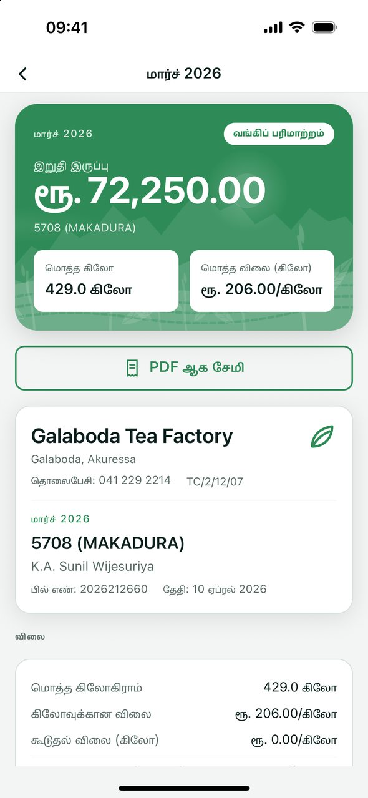
படம் 5.1 மார்ச் 2026
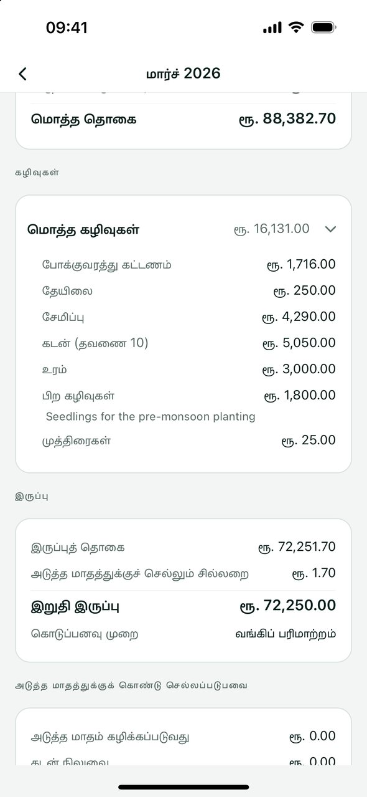
படம் 5.2 மார்ச் கழிவுகள், திறந்த நிலையில்
மொத்த தொகை 88,382.70
போக்குவரத்து கட்டணம் 1,716.00
தேயிலை 250.00
சேமிப்பு 4,290.00
கடன் (தவணை 10) 5,050.00 (தவணை 5,000 + வட்டி 50)
உரம் 3,000.00
பிற கழிவுகள் 1,800.00 "பருவமழைக்கு முந்திய நடுகைக்கான நாற்றுகள்"
முத்திரைகள் 25.00
மொத்த கழிவுகள் 16,131.00
இருப்புத் தொகை 72,251.70
இறுதி இருப்பு (பத்துகளாக) 72,250.00 சில்லறை 1.70 ஏப்ரலுக்கு
கடன் (தவணை 10) என்பது ஒரு கடனின் பத்தாவது மாதாந்திரத் தவணை. "அடுத்த மாதத்துக்குக் கொண்டு செல்லப்படுபவை" பகுதி இன்னும் செலுத்த வேண்டிய கடனையும் அந்த மாத வட்டியையும் (ரூ. 50.00) காட்டும்.
பிற கழிவுகள் வரியின் கீழ் எப்போதும் அலுவலகம் குறிப்பிட்ட காரணம் இருக்கும்.
உர நிலுவை ரூ. 9,000.00 என்பது பின்வரும் பில்களில் இன்னும் திருப்பிச் செலுத்த வேண்டிய உரம்.
6. வருமான வரலாறு
செயலியில் "வருமானம்" என்பது ஒவ்வொரு மாதத்தின் உங்கள் மொத்த தொகை. மேலே ஆண்டைத் தேர்ந்தெடுத்து, பின்னர் மூன்று காட்சிகளில் ஒன்றைத் தேர்ந்தெடுங்கள்:
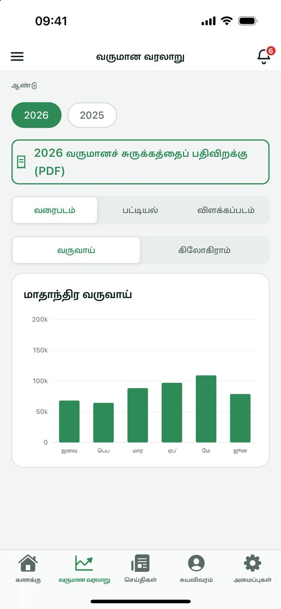
படம் 6.1 வரைபடம்
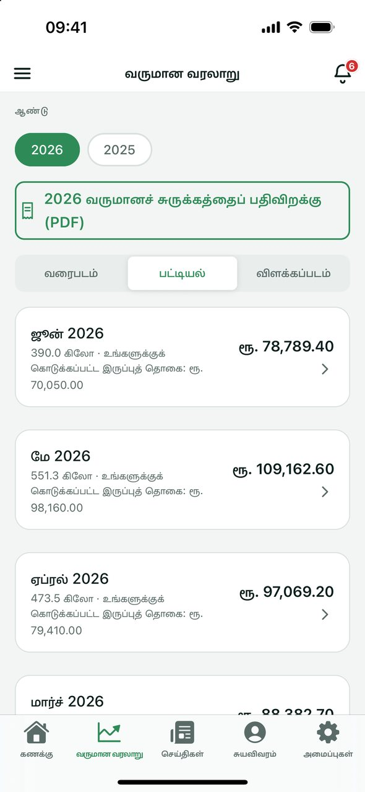
படம் 6.2 பட்டியல்
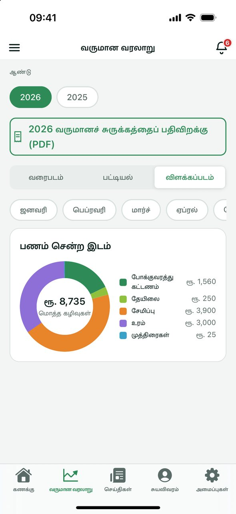
படம் 6.3 விளக்கப்படம்
வரைபடம்: ஒவ்வொரு மாதத்துக்கும் ஒரு பட்டை. வருவாய் மற்றும் கிலோகிராம் இடையே மாறுங்கள்: அதிகம் வழங்கியும் குறைவாகச் சம்பாதித்தீர்களா என்பதை இது ஒரே பார்வையில் காட்டும்.
பட்டியல்: ஒவ்வொரு மாதமும் அதன் கிலோ, மொத்த தொகை, செலுத்திய இருப்பு ஆகியவற்றுடன். ஒரு மாதத்தின் முழுப் பில்லைத் திறக்க அதைத் தட்டுங்கள்.
விளக்கப்படம்: ஒரு மாதத்தின் பணம் எங்கே சென்றது. ஜூனில் ரூ. 8,735 கழிவுகள்: போக்குவரத்து 1,560, தேயிலை 250, சேமிப்பு 3,900, உரம் 3,000, முத்திரைகள் 25.
2026 வருமானச் சுருக்கத்தைப் பதிவிறக்கு (PDF) அந்த ஆண்டை ஒரு PDF அறிக்கையாகச் சேமிக்கும்.
7. கடன் வசதி கோருதல்: ஒவ்வொரு கோரிக்கைத் திரையும் செய்வது
பக்க மெனுவைத் (☰) திறந்து கோரிக்கையைத் தேர்ந்தெடுங்கள். முன்பணம், கடன், உரம், தேயிலைப் பொதிகள் அனைத்தும் ஒரே விதமாகச் செயல்படும்:
மேலே உள்ள நீலப் பெட்டியில் விதியைப் படியுங்கள். தொழிற்சாலை எவ்வாறு தீர்மானிக்கிறது என்பதை அது ஒரே வாக்கியத்தில் சொல்லும்.
அதன் கீழே உள்ள அட்டையில் உங்கள் எண்களைப் படியுங்கள்: உங்கள் வரலாறு, வரம்பு, அது கணக்கிடப்பட்ட விதம். இவை தொழிற்சாலையின் சொந்த எண்கள்.
படிவத்தை நிரப்புங்கள்: தொகை (அல்லது அளவு), தெரிவுகள், விரும்பினால் ஒரு காரணம். உங்கள் வரம்புக்கு மேற்பட்ட தொகையைத் தட்டச்சு செய்யும்போதே அது மறுக்கப்படும்.
கோரிக்கையைச் சமர்ப்பி என்பதைத் தட்டுங்கள். சிக்னல் பலவீனமாக இருந்தாலும், ஒரு தட்டல் ஒரு கோரிக்கையை மட்டுமே அனுப்பும்.
திரையின் கீழே உள்ள வரலாற்றில் அதைப் பின்தொடருங்கள்: நிலுவையில், அனுமதிக்கப்பட்டது, நிராகரிக்கப்பட்டது அல்லது ரத்துசெய்யப்பட்டது, அலுவலகக் குறிப்புடன். முடிவு எடுக்கப்பட்டதும் உங்களுக்கு அறிவிப்பு வரும்.
மனம் மாறிவிட்டதா? நிலுவையில் உள்ள கோரிக்கையை அதன் வரியிலிருந்து ரத்துசெய்யலாம். அலுவலகம் ஏற்கனவே முடிவு எடுத்திருந்தால், ரத்துசெய்தல் மறுக்கப்படும்.
படிவம் இல்லாதபோது
இப்போது நீங்கள் கோர முடியாவிட்டால், படிவத்துக்குப் பதிலாக அதற்கான காரணத்தைச் சொல்லும் செம்மஞ்சள் நிறச் செய்தி திரையில் காட்டப்படும்: ஒரு கோரிக்கை ஏற்கனவே காத்திருக்கிறது, ஒரு கடன் இன்னும் செலுத்தப்பட வேண்டும், ஒரு முன்பணம் இன்னும் கழிக்கப்படவில்லை, போதுமான மாத வரலாறு இல்லை, உர வரம்பு எட்டப்பட்டுவிட்டது, அல்லது தொழிற்சாலை விலை நிர்ணயிக்கவில்லை.
கோருவது பெறுவது அல்ல
அலுவலகம் வேறொரு தொகையையோ காலத்தையோ அனுமதிக்கலாம். முடிவு எடுக்கும்போது அது உங்கள் வரம்பை மீண்டும் சரிபார்க்கும்.
8. முன்பணம் கோருதல்
முன்பணம் என்பது இந்த மாதம் நீங்கள் ஏற்கனவே வழங்கிய கொழுந்துக்கு எதிராகப் பெறும் பணம். அது இந்த மாதப் பில்லிலேயே முழுமையாகக் கழிக்கப்படும்.
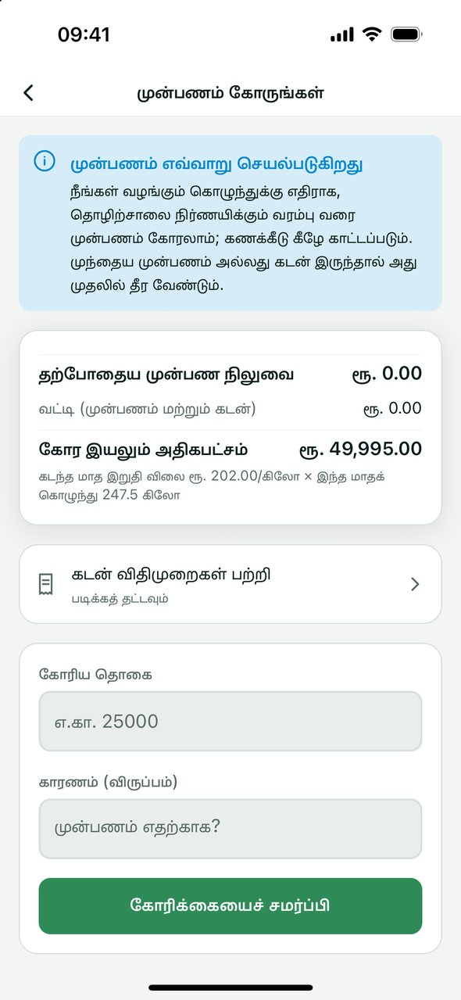
படம் 8.1 உங்கள் முன்பண வரம்பு
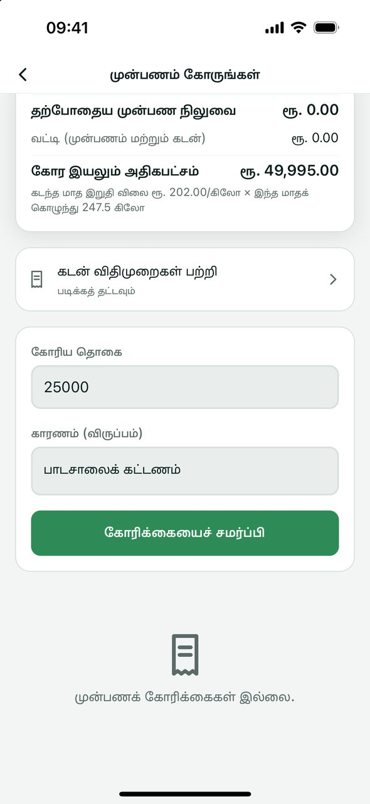
படம் 8.2 ரூ. 25,000 கோருதல்
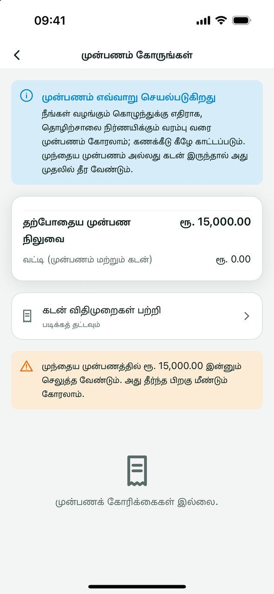
படம் 8.3 முந்தைய முன்பணம் இன்னும் செலுத்தப்படவில்லை
உதாரணம் (படம் 8.1)
கடந்த மாத இறுதி விலை (ஜூன்) கிலோவுக்கு ரூ. 202.00
இந்த மாதம் இதுவரை கொழுந்து (ஜூலை) 247.5 கிலோ
கோர இயலும் அதிகபட்சம் 202.00 × 247.5 = ரூ. 49,995.00
5708 ஆம் இலக்க வழங்குநர் பாடசாலைக் கட்டணத்துக்காக ரூ. 25,000 கோருகிறார் (படம் 8.2). அனுமதிக்கப்பட்டதும், அது ஜூலை பில்லில் முழுமையாகக் கழிக்கப்படும். மேலும் கொழுந்து நிறுக்கப்படும் ஒவ்வொரு நாளும் வரம்பு கூடும்.
முந்தைய முன்பணம் இன்னும் செலுத்தப்படாதபோது (படம் 8.3: "முந்தைய முன்பணத்தில் ரூ. 15,000.00 இன்னும் செலுத்த வேண்டும்"), அல்லது ஒரு கடன் செலுத்தப்பட வேண்டியிருக்கும்போது படிவம் இருக்காது.
முன்பணத்தைப் பல மாதங்களுக்குப் பிரிக்க முடியாது. மாதத்தின் கொழுந்து அதை ஈடுசெய்யாவிட்டால், மீதி நிலுவையாக அடுத்த மாதத்துக்குச் செல்லும்.
9. கடன் கோருதல்
கடன் என்பது உங்கள் வருமானப் பதிவுக்கு எதிராகப் பெறும் பணம்; நீங்கள் தேர்ந்தெடுக்கும் மாதங்களில் திருப்பிச் செலுத்தப்படும்.
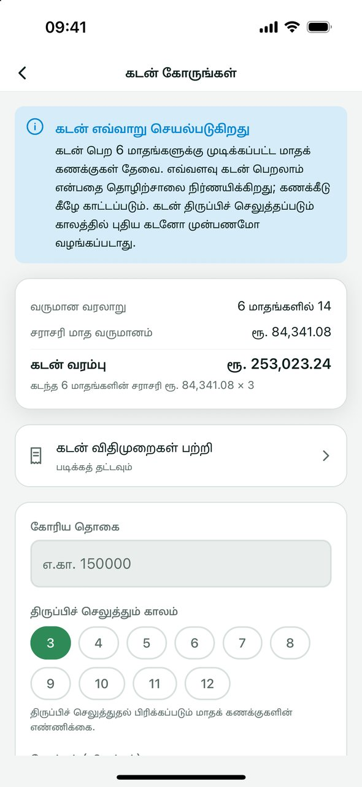
படம் 9.1 உங்கள் கடன் வரம்பு
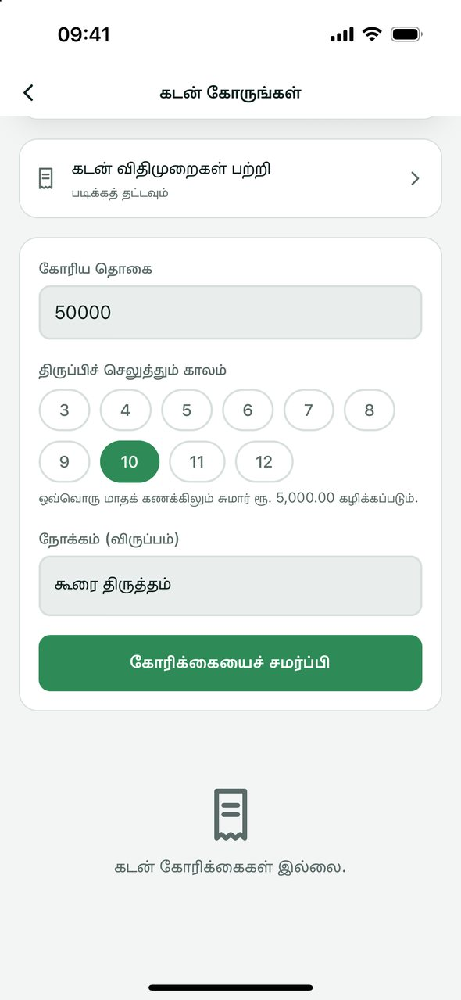
படம் 9.2 10 மாதங்களில் ரூ. 50,000
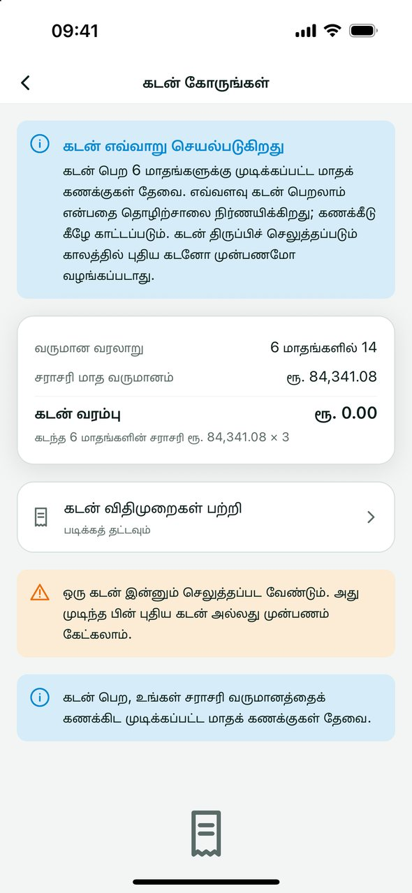
படம் 9.3 ஒரு கடன் இன்னும் செலுத்தப்பட வேண்டும்
உதாரணம் (படங்கள் 9.1 மற்றும் 9.2)
வருமான வரலாறு முடிக்கப்பட்ட 14 மாதங்கள் (6 தேவை)
சராசரி மாத வருமானம் ரூ. 84,341.08 (கடைசி 6 மாதங்கள்)
கடன் வரம்பு 3 × 84,341.08 = ரூ. 253,023.24
ரூ. 50,000 கோரி, 10 இல் திருப்பிச் செலுத்தினால் → "ஒவ்வொரு மாதக் கணக்கிலும் சுமார் ரூ. 5,000.00 கழிக்கப்படும்"
கோரிய தொகை என்ற இடத்தில் தொகையைத் தட்டச்சு செய்யுங்கள்.
திருப்பிச் செலுத்தும் காலம் என்பதன் கீழ், மாதக் கணக்குகளின் எண்ணிக்கையைத் தட்டுங்கள் (3 முதல் 12 வரை). அதன் கீழ் உள்ள தொகை ஒவ்வொரு பில்லிலும் எவ்வளவு கழிக்கப்படும் என்பதைக் காட்டும்; உங்களால் தாங்க முடியுமா என்று பார்க்கலாம்.
விரும்பினால் ஒரு நோக்கத்தைச் சேர்த்து (உதாரணமாக "கூரை திருத்தம்") கோரிக்கையைச் சமர்ப்பி என்பதைத் தட்டுங்கள்.
ஒவ்வொரு பில்லிலும் அதே தவணை, இலக்கமிட்டுக் கழிக்கப்படும்: "கடன் (தவணை 3)". கொழுந்து குறைவான மாதத்தில் தொழிற்சாலை குறைவாகக் கழிக்கலாம்; அப்போது கடன் சற்று நீண்ட காலம் செல்லும், அவ்வளவுதான்.
உங்கள் தொழிற்சாலை வட்டி அறவிட்டால், அது ஒவ்வொரு பில்லிலும் "கடன் வட்டி" எனக் காட்டப்படும்.
ஒரு கடன் செலுத்தப்பட வேண்டியிருக்கும்போது, புதிய கடனோ முன்பணமோ கோர முடியாது (படம் 9.3). உரத்துக்கு இது பொருந்தாது.
10. உரம் கோருதல்
தொழிற்சாலைக் களஞ்சியத்திலிருந்து கடனுக்குப் பெறும் உரம்; நீங்கள் தேர்ந்தெடுக்கும் மாதங்களில் திருப்பிச் செலுத்தப்படும்.
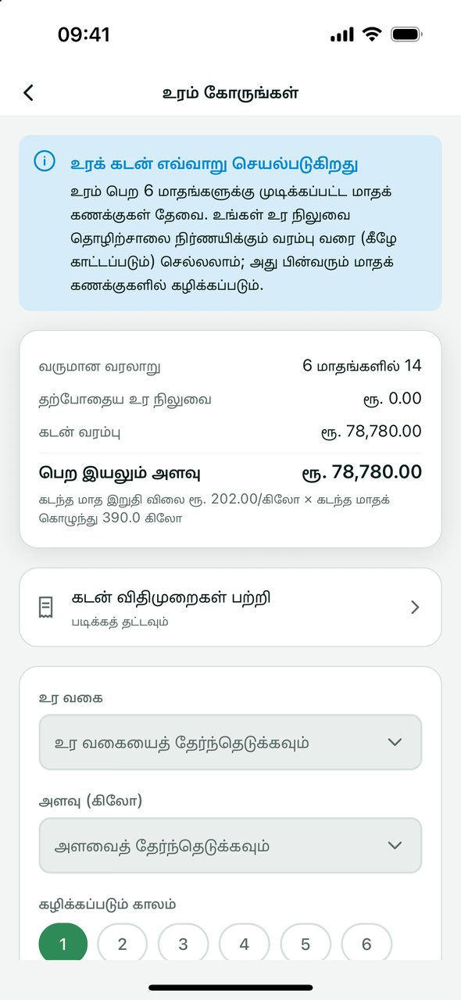
படம் 10.1 உர வரம்பும் படிவமும்
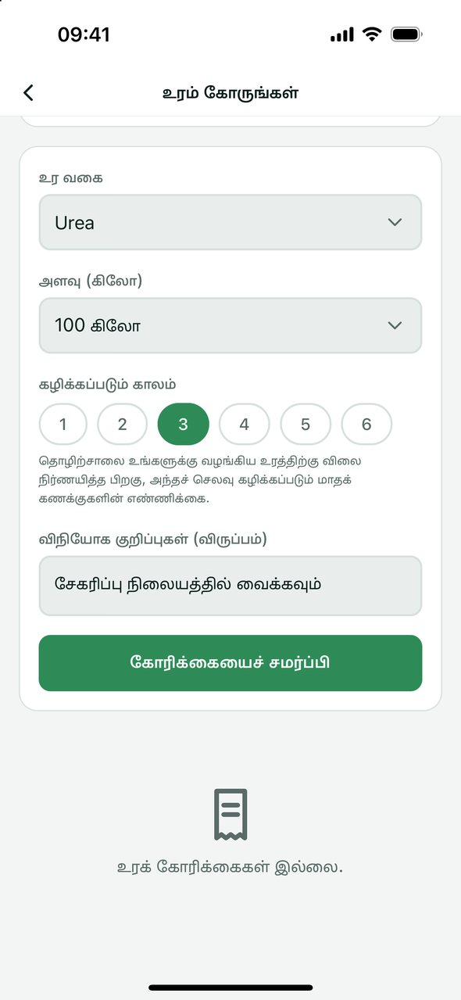
படம் 10.2 3 மாதங்களில் 100 கிலோ யூரியா
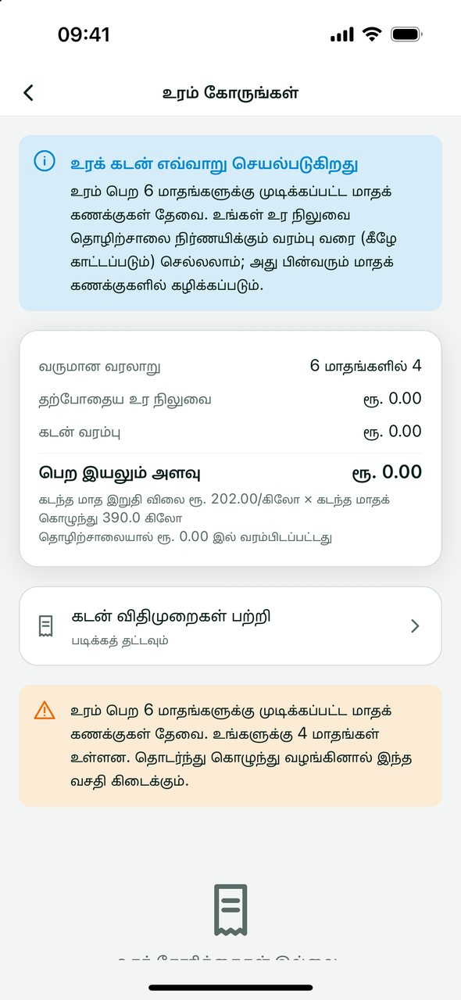
படம் 10.3 இன்னும் போதுமான வரலாறு இல்லை
தொழிற்சாலையின் பட்டியலிலிருந்து உர வகை யைத் தேர்ந்தெடுங்கள்.
அளவு (கிலோ) வைத் தேர்ந்தெடுங்கள்: 25 கிலோ படிகளாக 25 முதல் 400 கிலோ வரை, அல்லது வேறு அளவைத் தட்டச்சு செய்யுங்கள்.
கழிக்கப்படும் காலம் என்பதன் கீழ், எத்தனை மாதக் கணக்குகள் என்பதைத் தட்டுங்கள் (1 முதல் 6 வரை).
விரும்பினால் விநியோகக் குறிப்புகளைச் சேர்த்து, கோரிக்கையைச் சமர்ப்பி என்பதைத் தட்டுங்கள்.
உதாரணம்
வரம்பு: கடந்த மாத இறுதி விலை 202.00 × கடந்த மாதக் கொழுந்து 390.0 கிலோ = ரூ. 78,780.00
யூரியா 50 கிலோ மூடைகளில், ஒரு மூடை ரூ. 9,800 க்கு விற்கப்படுகிறது
100 கிலோ → 2 மூடைகள் → ரூ. 19,600, 3 கணக்குகளில் கழிக்கப்படும்
நீங்கள் விலையைத் தட்டச்சு செய்வதில்லை: தொழிற்சாலை தனது சொந்தப் பட்டியலிலிருந்து, முழு மூடைகளாக, கோரிக்கைக்கு விலை இடும் (60 கிலோ என்றால் 2 மூடைகள்).
உரம் பெற முடிக்கப்பட்ட 6 மாத வரலாறு தேவை (படம் 10.3: "உங்களுக்கு 4 மாதங்கள் உள்ளன. தொடர்ந்து கொழுந்து வழங்கினால் இந்த வசதி கிடைக்கும்.").
11. தேயிலைப் பொதிகள் கோருதல்
உங்கள் வீட்டுக்குத் தொழிற்சாலையின் சொந்தத் தேயிலைப் பொதிகள். இது கடன் அல்ல: அதன் விலை உங்கள் அடுத்த பில்லின் தேயிலை வரியில் கழிக்கப்படும்.
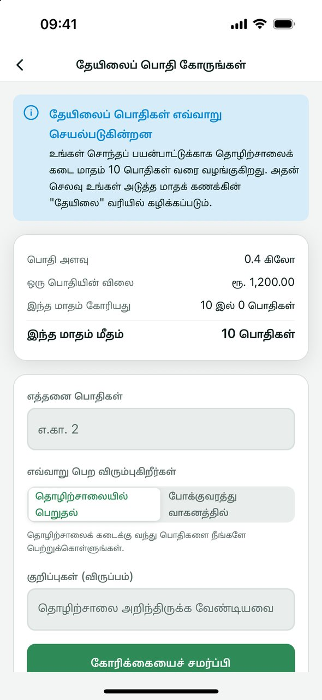
படம் 11.1 பொதியின் விலையும் அனுமதிக்கப்பட்ட எண்ணிக்கையும்
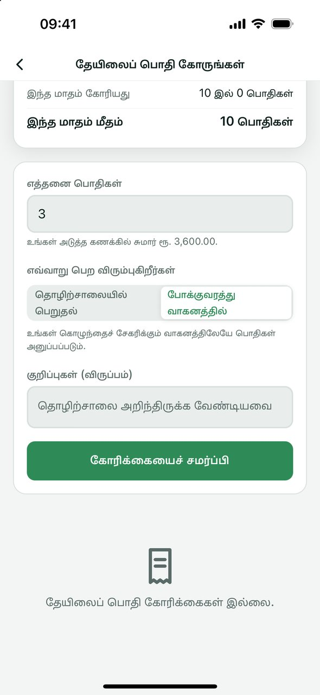
படம் 11.2 வாகனத்தில் 3 பொதிகள்
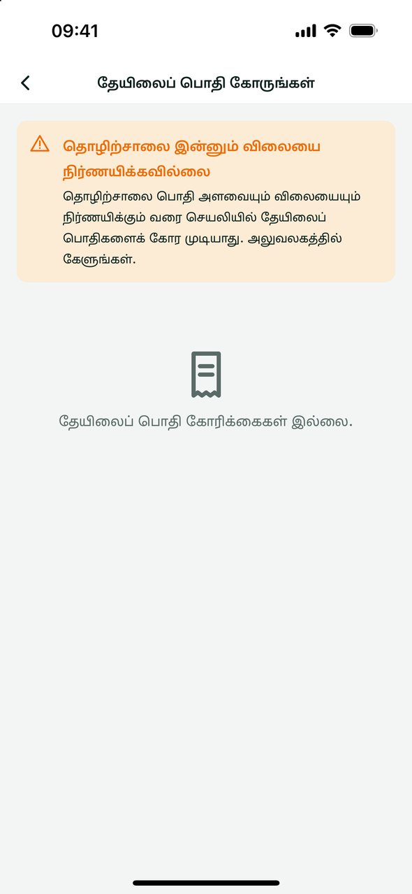
படம் 11.3 இன்னும் விலை நிர்ணயிக்கப்படவில்லை
எத்தனை பொதிகள் என்பதைத் தட்டச்சு செய்யுங்கள். அதன் கீழ் செலவு தோன்றும் (ரூ. 1,200 விலையில் 3 பொதிகளுக்கு "உங்கள் அடுத்த கணக்கில் சுமார் ரூ. 3,600.00.").
எவ்வாறு பெற விரும்புகிறீர்கள் என்பதைத் தேர்ந்தெடுங்கள்: தொழிற்சாலையில் பெறுதல் அல்லது உங்கள் கொழுந்தை எடுத்துச் செல்லும் போக்குவரத்து வாகனத்தில்.
கோரிக்கையைச் சமர்ப்பி என்பதைத் தட்டுங்கள்.
தொழிற்சாலை ஒவ்வொரு மாதமும் குறிப்பிட்ட எண்ணிக்கையான பொதிகளை அனுமதிக்கும் (இந்த உதாரணத்தில் 10); எத்தனை மீதமுள்ளன என்பதைத் திரை காட்டும். தொழிற்சாலை விலை நிர்ணயிக்கவில்லை என்றால், அலுவலகத்தில் மட்டுமே கோர முடியும் (படம் 11.3).
12. சேமிப்பு
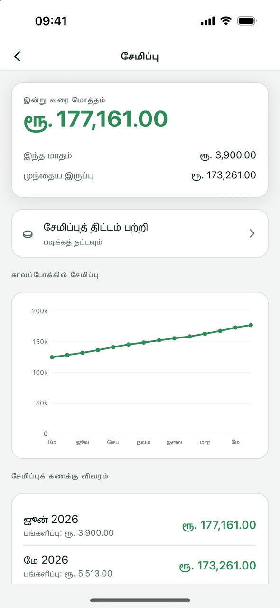
படம் 12.1 உங்கள் சேமிப்பு
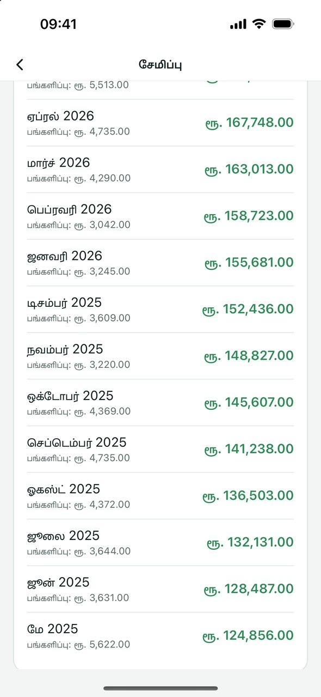
படம் 12.2 சேமிப்புப் பதிவேடு
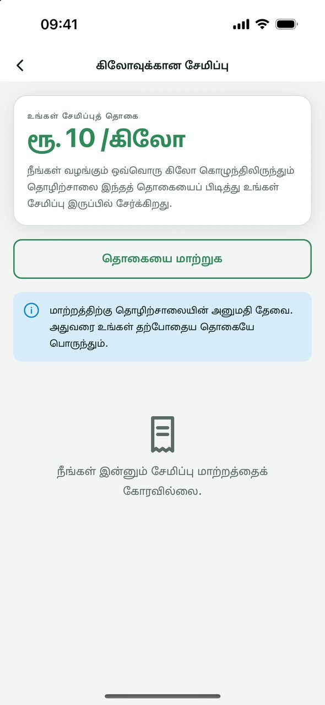
படம் 12.3 கிலோவுக்கான சேமிப்பு
சேமிப்பு (பக்க மெனு) இன்று வரையான உங்கள் மொத்தத்தையும், இந்த மாதச் சேமிப்பையும் முந்தைய இருப்பையும், ஒரு வரைபடத்தையும், ஒவ்வொரு மாதப் பங்களிப்பையும் அதன் பின்னரான இருப்புடன் காட்டும். உதாரணம்: ரூ. 173,261.00 + 3,900.00 = ரூ. 177,161.00.
ஒவ்வொரு மாதமும் உங்கள் சேமிப்பு = கிலோவுக்கான உங்கள் சேமிப்பு × உங்கள் கிலோ (ரூ. 10 × 390 கிலோ = ரூ. 3,900).
கிலோவுக்கான சேமிப்பை மாற்ற: அமைப்புகள் → கிலோவுக்கான சேமிப்பு → தொகையை மாற்றுக, புதிய தொகையைத் தேர்ந்தெடுத்து அனுப்புங்கள். தொழிற்சாலை அனுமதிக்கும் வரை உங்கள் தற்போதைய தொகையே தொடரும்; இன்னும் முடிக்கப்படாத அடுத்த மாதத்திலிருந்து மாற்றம் ஆரம்பிக்கும். 0 ஐத் தேர்ந்தெடுத்தால் சேமிப்பு நிறுத்தப்படும்.
சேமிப்பைப் பெற்றுக்கொள்ள: அலுவலகத்தில் கேளுங்கள். தொழிற்சாலையின் பணம் எடுக்கும் மாதத்தில் (வழக்கமாக ஏப்ரல்) மட்டுமே பணம் எடுக்கலாம்; அது உங்கள் அடுத்த பில்லில் செலுத்தப்படும்.
13. உங்கள் சுயவிவரமும் நீங்கள் பணம் பெறும் விதமும்
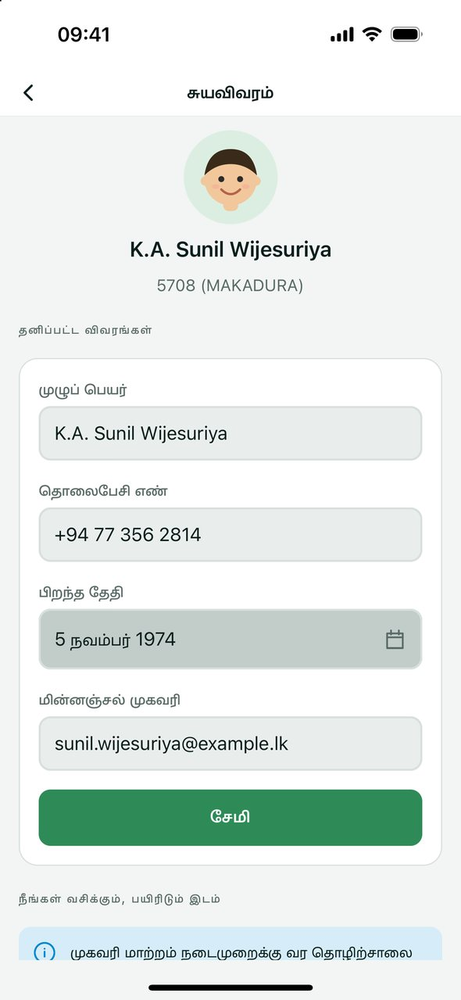
படம் 13.1 தனிப்பட்ட விவரங்கள்
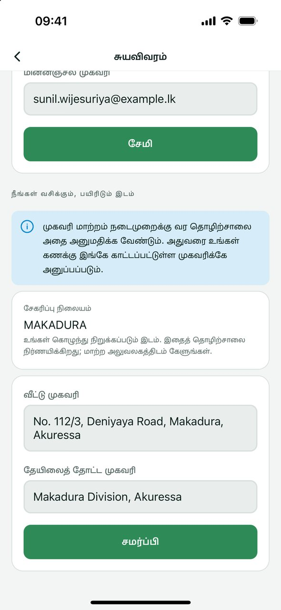
படம் 13.2 சேகரிப்பு நிலையமும் முகவரிகளும்
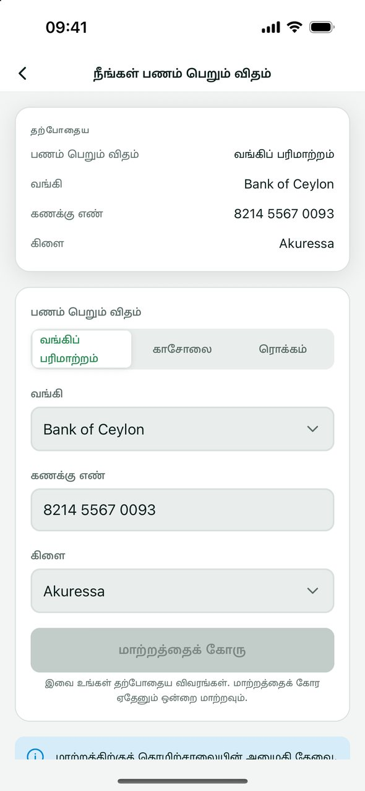
படம் 13.3 நீங்கள் பணம் பெறும் விதம்
என்ன
அதை எப்படி மாற்றுவது
எப்போது மாறும்
பெயர், தொலைபேசி, பிறந்த திகதி, மின்னஞ்சல்
சுயவிவரம் → திருத்து → சேமி
உடனடியாக
வீட்டு முகவரி, தேயிலைத் தோட்ட முகவரி
சுயவிவரம் → நீங்கள் வசிக்கும், பயிரிடும் இடம் → சமர்ப்பி
தொழிற்சாலை அனுமதித்ததும்
காசோலை, வங்கிப் பரிமாற்றம் அல்லது ரொக்கம்; வங்கி, கணக்கு எண், கிளை
அமைப்புகள் → வங்கி விவரங்கள் (நீங்கள் பணம் பெறும் விதம்) → மாற்று → மாற்றத்தைக் கோரு
தொழிற்சாலை அனுமதித்ததும்
சேகரிப்பு நிலையம்
சுயவிவரத்தில் காட்டப்படும்; அலுவலகத்தில் கேளுங்கள்
தொழிற்சாலை நிர்ணயிக்கும்
சுயவிவரப் படம் (10 படங்கள்)
அமைப்புகள் → சுயவிவரப் படம்
உடனடியாக
மாற்றம் காத்திருக்கும்போது
செயலி உங்கள் தற்போதைய வங்கிக் கணக்கைத் தொடர்ந்து காட்டும், புதியதற்கு அருகில் "அனுமதிக்காகக் காத்திருக்கிறது" என்று இருக்கும். தொழிற்சாலை அனுமதிக்கும் வரை உங்கள் பணம் தற்போதைய கணக்குக்கே செல்லும். புதிய வங்கிக் கணக்கை அனுமதிக்கும் முன் அலுவலகம் உங்கள் வங்கிப் புத்தகத்தைச் சரிபார்க்கும்.
14. தொழிற்சாலையைத் தொடர்பு கொள்ளுதல்
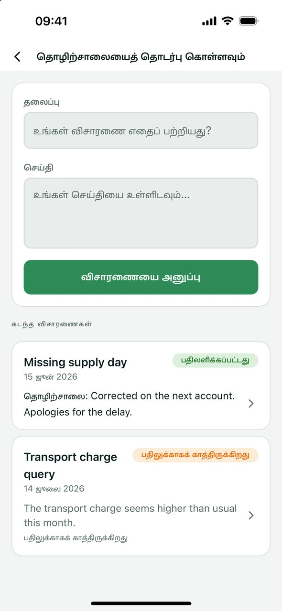
படம் 14.1 புதிய செய்தியும் முந்தையவையும்
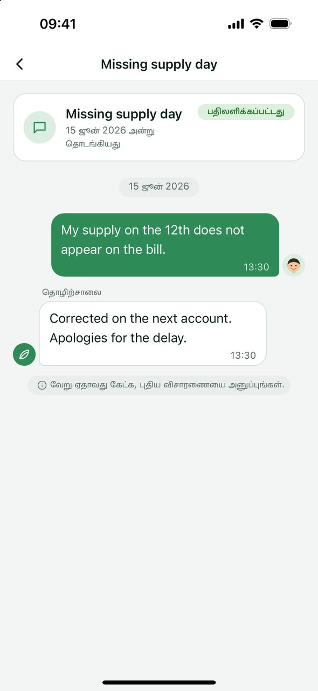
படம் 14.2 ஒரு உரையாடல்
பக்க மெனு → தொழிற்சாலையைத் தொடர்பு கொள்ளவும்.
தலைப்பு ஒன்றையும் உங்கள் செய்தி யையும் (2,000 எழுத்துகள் வரை) தட்டச்சு செய்து, விசாரணையை அனுப்பு என்பதைத் தட்டுங்கள்.
முந்தைய விசாரணைகள் "பதிலுக்காகக் காத்திருக்கிறது" அல்லது "பதிலளிக்கப்பட்டது" எனக் காட்டும். அலுவலகத்தின் பதிலைப் படிக்கவும் மீண்டும் எழுதவும் ஒன்றைத் தட்டுங்கள்.
உதாரணம் (படம் 14.2): "12 ஆம் திகதி நான் வழங்கியது பில்லில் காட்டப்படவில்லை." அலுவலகம் பதிலளித்தது: "அடுத்த கணக்கில் திருத்தப்பட்டுள்ளது. தாமதத்துக்கு வருந்துகிறோம்." அலுவலகம் ஒரு உரையாடலை மூடியதும், வேறு விடயத்துக்குப் புதிய விசாரணையைத் தொடங்குங்கள்.
15. செய்திகளும் அறிவிப்புகளும்
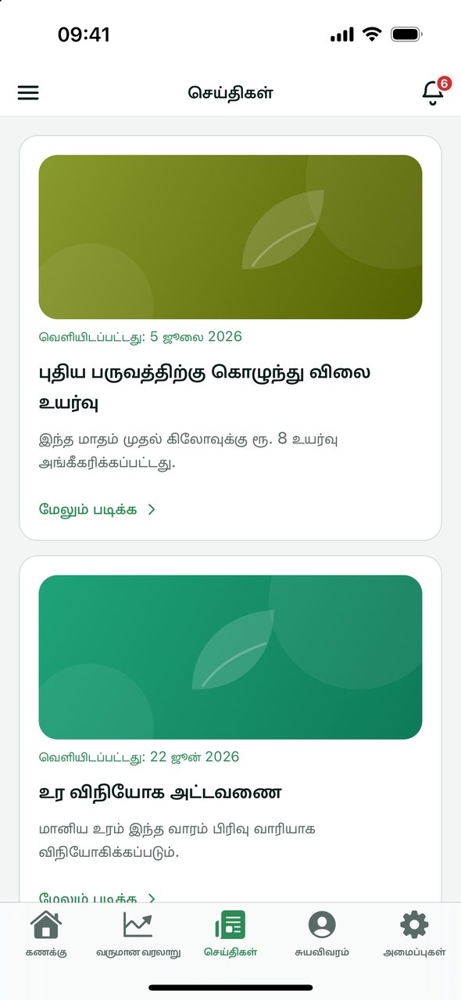
படம் 15.1 செய்திகள்
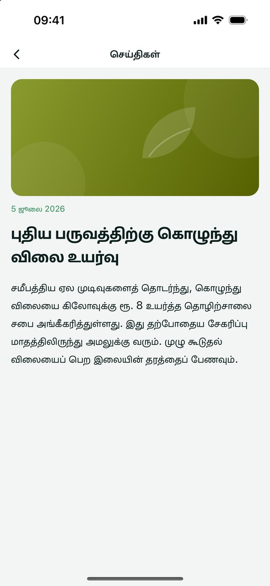
படம் 15.2 ஒரு கட்டுரை
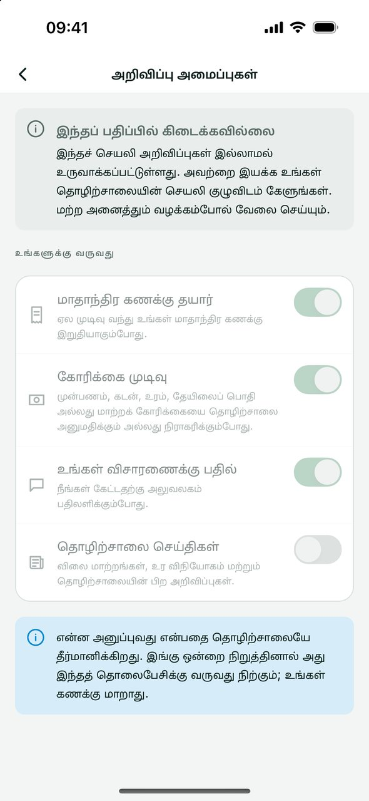
படம் 15.3 அறிவிப்பு அமைப்புகள்
செய்திகள் தாவல்: தொழிற்சாலையின் கட்டுரைகள், புதியது முதலில். புதுப்பிக்கக் கீழே இழுங்கள்; ஒன்றைத் திறக்க மேலும் படிக்க என்பதைத் தட்டுங்கள்.
மணி: உங்கள் கணக்கு தயார், ஒரு கோரிக்கைக்கு முடிவு, உங்கள் விசாரணைக்குப் பதில், தொழிற்சாலைச் செய்திகள். ஒன்றைத் தட்டினால் அது எதைப் பற்றியதோ அது திறக்கும்; அனைத்தையும் படித்ததாகக் குறி சிவப்பு எண்ணை நீக்கும். தொலைபேசி அறிவிப்பைத் தவறவிட்டாலும் அனைத்தும் பட்டியலில் இருக்கும்.
அமைப்புகள் → அறிவிப்புகள் (படம் 15.3): ஒவ்வொரு வகையையும் இயக்கலாம் அல்லது நிறுத்தலாம்.
16. அமைப்புகள்
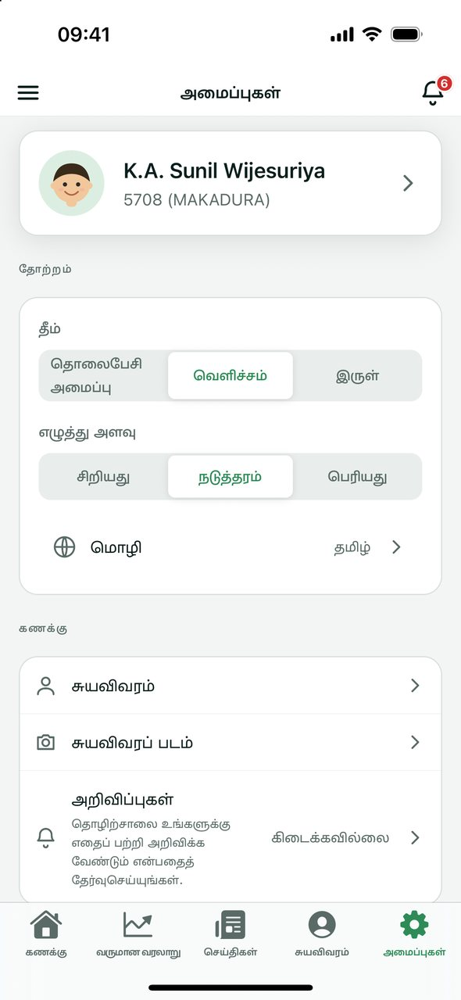
படம் 16.1 தோற்றமும் மொழியும்
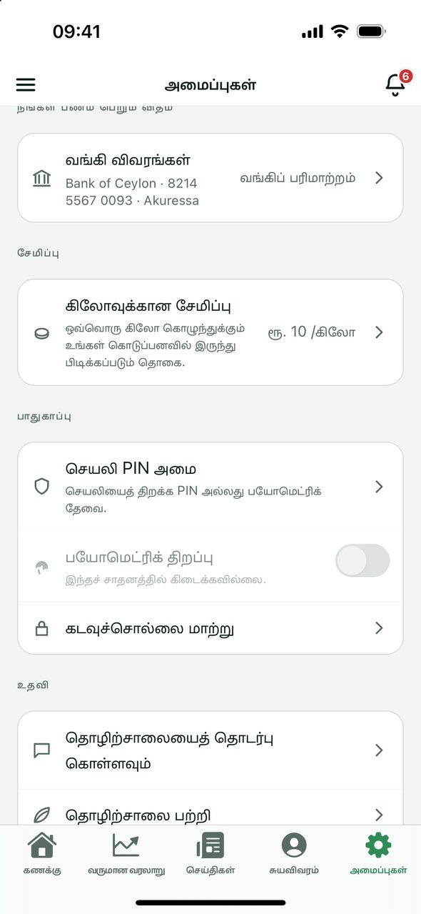
படம் 16.2 கொடுப்பனவு, சேமிப்பு, பாதுகாப்பு
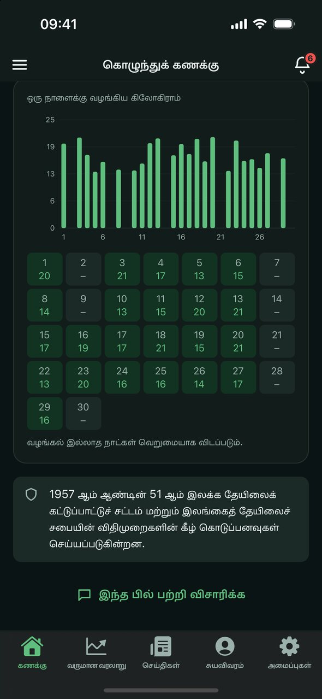
படம் 16.3 இருள் தீம்
அமைப்பு
அது செய்வது
தீம்
தொலைபேசி அமைப்பு, வெளிச்சம் அல்லது இருள் (படம் 16.3)
எழுத்து அளவு
எல்லா இடத்திலும் சிறியது, நடுத்தரம் அல்லது பெரியது
மொழி
சிங்களம், ஆங்கிலம் அல்லது தமிழ்
செயலி PIN அமை, பயோமெட்ரிக் திறப்பு
PIN, கைரேகை அல்லது முகம் மூலம் செயலியைப் பூட்டுதல்
தானியங்கு பூட்டு
செயலியை விட்டு வெளியேறிய பின் PIN கேட்கும்: உடனடியாக, 1 அல்லது 5 நிமிடங்களுக்குப் பிறகு, அல்லது ஒருபோதும் பூட்ட வேண்டாம்
கடவுச்சொல்லை மாற்று
தற்போதைய கடவுச்சொல்லைத் தட்டச்சு செய்து, புதியதை இரண்டு முறை தட்டச்சு செய்து, கடவுச்சொல்லைப் புதுப்பி என்பதைத் தட்டுங்கள்
வங்கி விவரங்கள், கிலோவுக்கான சேமிப்பு
பகுதிகள் 12 மற்றும் 13
தொழிற்சாலையைத் தொடர்பு கொள்ளவும், தொழிற்சாலை பற்றி, விதிமுறைகள் & நிபந்தனைகள், தனியுரிமைக் கொள்கை, அடிக்கடி கேட்கப்படும் கேள்விகள், உதவி
பகுதி 17
வெளியேறு
இந்தத் தொலைபேசியிலிருந்து உங்களை வெளியேற்றும்
எனது கணக்கை நீக்கு
உங்கள் செயலிக் கணக்கை மூடுமாறு தொழிற்சாலையிடம் கேட்கும்
17. உதவிப் பக்கங்கள்
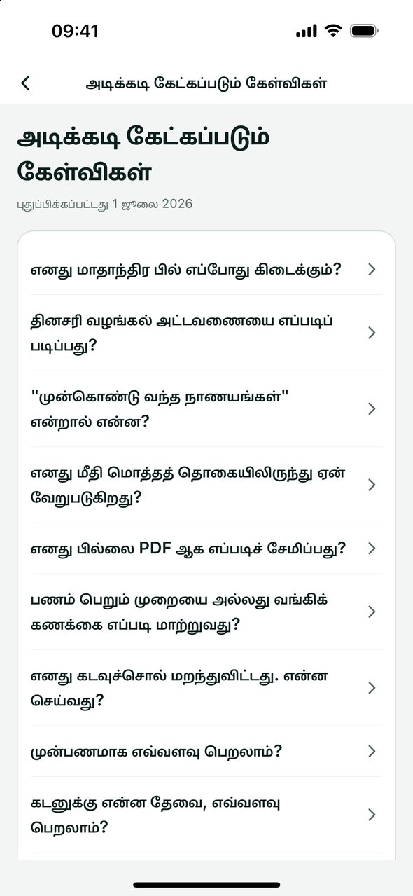
படம் 17.1 அடிக்கடி கேட்கப்படும் கேள்விகள்
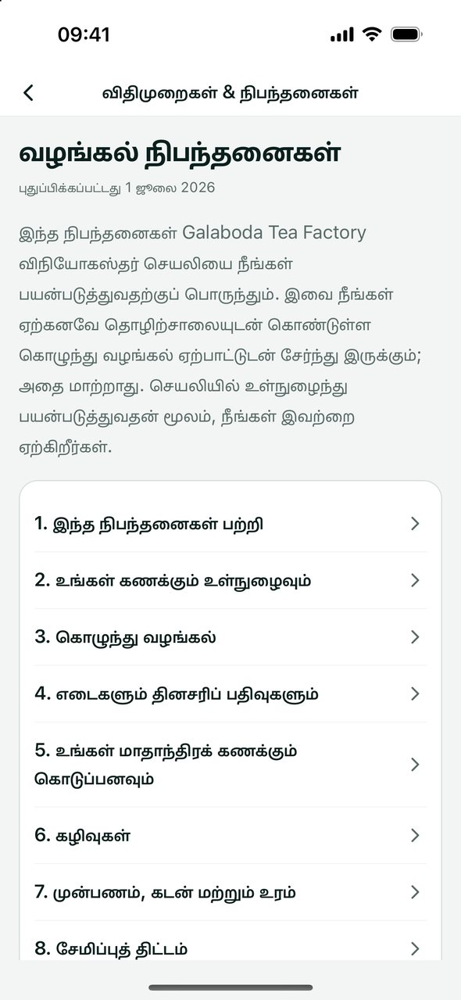
படம் 17.2 வழங்கல் விதிமுறைகள்
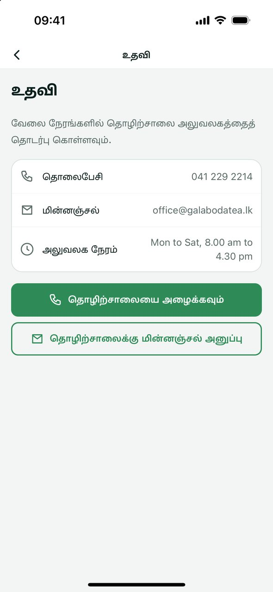
படம் 17.3 உதவி
அமைப்புகளிலிருந்து: அடிக்கடி கேட்கப்படும் கேள்விகள் பொதுவான கேள்விகளுக்குப் பதில் தரும் (என் பில் எப்போது தயாராகும், முந்தைய மாதச் சில்லறை என்றால் என்ன, நான் எவ்வளவு கடன் பெறலாம்); விதிமுறைகள் மற்றும் தனியுரிமை தொழிற்சாலையின் நிபந்தனைகள்; உதவி அலுவலகத் தொலைபேசி, மின்னஞ்சல், நேரம் ஆகியவற்றை, அழைக்கவும் மின்னஞ்சல் அனுப்பவும் பொத்தான்களுடன் காட்டும்.
18. கேள்விகளும் பதில்களும்
கேள்வி
பதில்
கடந்த மாதப் பில் காட்டப்படவில்லை.
ஏல விலை தெரிந்த பின்னரே அலுவலகம் பில்களை வெளியிடும்; வழக்கமாக அடுத்த மாதத்தின் முதல் இரண்டு வாரங்களில். அதுவரை முந்தைய பில்லைக் காண்பீர்கள், "இந்த மாதம் இதுவரை" அட்டையில் "மாதம் முடிந்தது, பில் தயாராகிறது" என்று இருக்கும்.
பணத் தொகைகள் வெறுமையாக உள்ளன.
அந்த மாதத்தின் விலை இன்னும் நிர்ணயிக்கப்படவில்லை. வெறுமை என்றால் பூஜ்ஜியம் அல்ல.
எனக்கு ஏன் ரூ. 70,054.40 அல்ல, ரூ. 70,050 செலுத்தப்பட்டது?
தொழிற்சாலை முழுப் பத்துகளாகவே செலுத்தும். ரூ. 4.40 "அடுத்த மாதத்துக்குச் செல்லும் சில்லறை" ஆகும்; அது அடுத்த மாதப் பில்லில் செலுத்தப்படும்.
ஏன் என்னால் கடனோ முன்பணமோ கோர முடியவில்லை?
திரையில் உள்ள செம்மஞ்சள் நிறச் செய்தியைப் படியுங்கள். பெரும்பாலும் ஒரு கடன் இன்னும் செலுத்தப்பட வேண்டும், முந்தைய கோரிக்கை இன்னும் காத்திருக்கிறது, அல்லது போதுமான முடிக்கப்பட்ட மாதங்கள் இன்னும் இல்லை.
செயலியும் என் காகிதச் சீட்டும் ஒத்துப்போகவில்லை.
அவை எப்போதும் ஒத்துப்போக வேண்டும். "இந்த பில் பற்றி விசாரிக்க" என்பதைத் தட்டுங்கள் அல்லது அலுவலகத்தை அழையுங்கள்.
வங்கிக் கணக்கை மாற்றினேன், ஆனால் எதுவும் மாறவில்லை.
அது தொழிற்சாலையின் அனுமதிக்காகக் காத்திருக்கிறது. அதுவரை தற்போதைய கணக்கே பயன்படுத்தப்படும்.
என் அமர்வு முடிந்துவிட்டது என்று செயலி சொல்கிறது.
மீண்டும் உள்நுழையுங்கள். அலுவலகம் உங்கள் கடவுச்சொல்லை மீட்டமைத்திருந்தால், புதியதைப் பயன்படுத்துங்கள்.
என் PIN மறந்துவிட்டது.
பூட்டுத் திரையில் கடவுச்சொல்லைப் பயன்படுத்து என்பதைத் தட்டி, உங்கள் வழங்குநர் எண்ணும் கடவுச்சொல்லும் கொண்டு உள்நுழையுங்கள்.